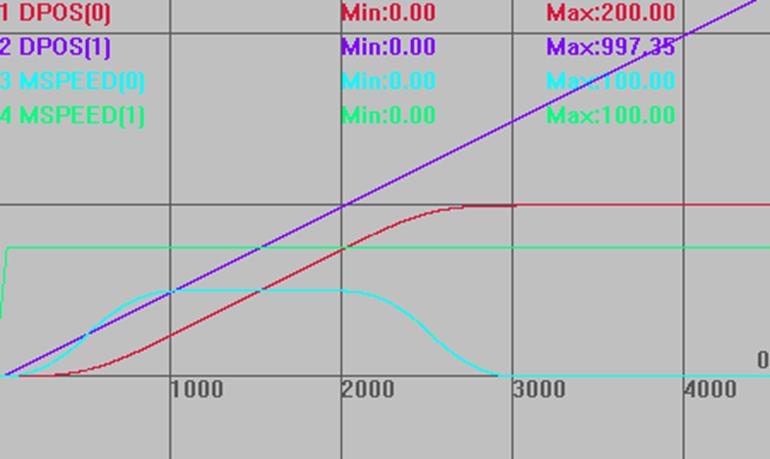
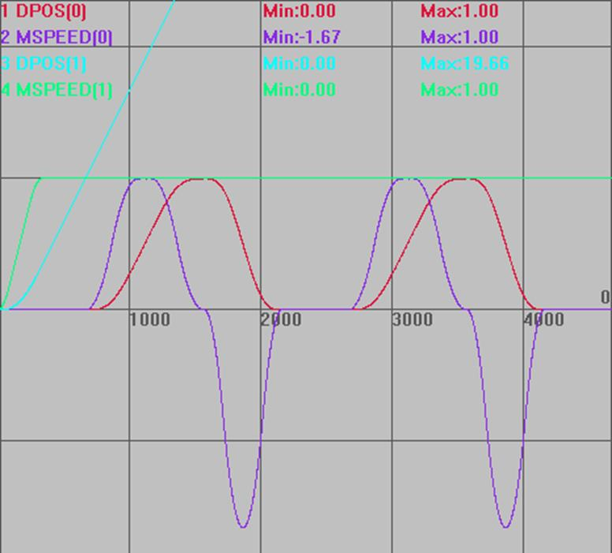

|
类型 |
同步运动指令 | |||||||||||||||||||||
|
描述 |
此指令用于自定义的凸轮运动，该运动自动规划中间曲线，不用计算凸轮表。
被连接轴为参考轴，连接轴为跟随轴。 在加速和减速阶段为了与速度匹配，下一条MOVESLINK的start sp必须与当前MOVESLINK的end sp相同。 请确保指令传递的距离参数*units是整数个脉冲，否则出现浮点数会导致运动有细微误差。 | |||||||||||||||||||||
|
语法 |
MOVESLINK (distance,link dist,start sp,end sp,link axis[,link options][,link pos][, link offpos]) [, link options] [, link pos] 可选参数不填时，逗号不能省掉，控制器根据参数的位置来判断是什么参数。 distance：从连接开始到结束，跟随轴移动的距离，此参数可正可负，为正数正方向跟随，为负数负方向跟随，采用units单位 link dist：参考轴在连接的整个过程中移动的绝对距离，采用units单位 start sp：启动时跟随轴和参考轴的速度比例，units/units单位，负数表示跟随轴负向运动 end sp：结束时跟随轴和参考轴的速度比例，units/units单位, 负数表示跟随轴负向运动 注：当start sp = end sp = distance/link dist时，匀速运动 link axis：参考轴的轴号 link options：连接模式选项，不同的二进制位代表不同的意义
link pos：当link options参数设置为2时，该参数表示参考轴在该绝对位置值时，连接开始 link offpos：当link_options参数bit4置为1时，该参数表示主轴已经运行完的相对位置。20170428以上固件支持。 | |||||||||||||||||||||
|
适用控制器 |
通用 | |||||||||||||||||||||
|
例子 |
功能与MOVELINK相同，仅是参数设置区别 例一： RAPIDSTOP(2) WAIT IDLE(0) WAIT IDLE(1) DATUM(0)
UNITS=100,100 ATYPE=1,1 DPOS=0,0 SPEED=100,100 ACCEL=2000,2000 DECEL=2000,2000 TRIGGER '自动触发示波器 MOVESLINK(50,100,0,1,1) AXIS(0) '轴0跟踪轴1运动，从速度0到速度一致 MOVESLINK(100,100,1,1,1) AXIS(0) '轴0跟踪轴1运动，匀速100units MOVESLINK(50,100,1,0,1) AXIS(0) '轴0跟踪轴1运动，减速到0 VMOVE(1) AXIS(1)
运动轨迹和速度曲线 DPOS(0)垂直刻度200，无偏移 DPOS(1)垂直刻度200，无偏移 MSPEED(0)垂直刻度200，无偏移 MSPEED(1)垂直刻度200，偏移50 
例二：追剪 RAPIDSTOP(2) WAIT IDLE(0) WAIT IDLE(1) DATUM(0)
BASE(0,1) UNITS=10000,10000 ATYPE=1,1 DPOS=0,0 SPEED=1,1 ACCEL=2,2 DECEL=2,2 SRAMP=200,200 TRIGGER '自动触发示波器 VMOVE(1) AXIS(1) WHILE 1 MOVESLINK(0,1,0,0,1) AXIS(0) '型材运动1单位前，工作台静止 MOVESLINK(0.4,0.8,0,1,1) AXIS(0) '工作台加速阶段 MOVESLINK(0.2,0.2,1,1,1) AXIS(0) '速度跟随阶段 MOVESLINK(0.4,0.8,1,0,1) AXIS(0) '工作台减速阶段 MOVESLINK(-1,1.2,0,0,1) AXIS(0) '工作台回到起始点 WEND
运动轨迹和速度曲线 DPOS(0)垂直刻度1，无偏移 DPOS(1)垂直刻度1，无偏移 MSPEED(0)垂直刻度1，无偏移 MSPEED(1)垂直刻度1，无偏移  | |||||||||||||||||||||
|
相关指令 |